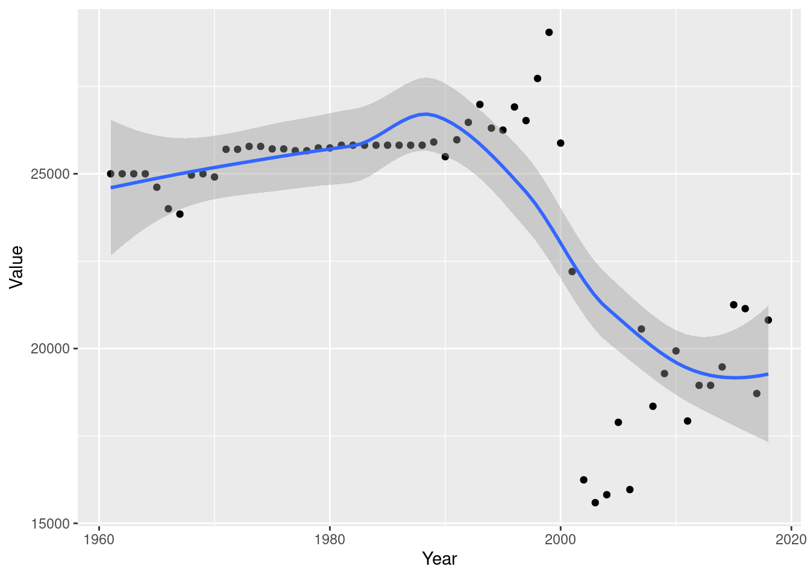

Code
#install.packages("dyplr")
library(tidyverse)
library(dplyr)
library(ggplot2)
library(lubridate)
knitr::opts_chunk$set(echo = TRUE)Henry Mitrano
February 3, 2023
Rows: 38170 Columns: 14
── Column specification ────────────────────────────────────────────────────────
Delimiter: ","
chr (8): Domain Code, Domain, Area, Element, Item, Unit, Flag, Flag Description
dbl (6): Area Code, Element Code, Item Code, Year Code, Year, Value
ℹ Use `spec()` to retrieve the full column specification for this data.
ℹ Specify the column types or set `show_col_types = FALSE` to quiet this message.Here, we slim down on a lot of the redundant fat of the original dataset. There were 4 columns including “codes”, which served as numerical pointers to certain fields- areas, designation, year, element. These are all repeated hundreds of times, so to reduce size and efficency of operation I eliminated all those extraneous columns. Our data is much more tidy to work with now.
Lets look at the data now. What can we expect we might need to visualize? Well, for starters we have a year date category, spanning back to the mid 1900s. We also have multiple different categories of livestock production- we can also see there are a few different kinds of ways to measure the production of the good- we have some numbers measuring production and some measuring yield, which I want to focus on. In agriculture, yield refers to “per-area harvest”, while production is tons of total harverst measured per hectare. Now,for a lot of the data in this set, “yield” values are greater than “production”, meaning we can assume in those areas that the average area of harvesting farmland is smaller than a hectare (or their prod values would be greater than yield)
Here, we make a decision about what we want to observe when we move to visualization. For the sake of ease, I’m limiting this table to show only yield values year to year, so we can view a specific country’s growth in yield over time, and compare to others if we want. Lets plot the first country listed, Afghanistan, and their yield over the last 50 or so years. ## Visualizing and Customizing Data
`geom_smooth()` using method = 'loess' and formula = 'y ~ x'
Wow, we can see that there has been a remarkable effect on the yield of eggs in Afghanistan, specifically in the last 20 years. In the 1960s rates were at an incredible high, but at the dawn of the 21st century (and the start of the U.S. war in Afghanistan) yield dropped in half, naturally. ## Limitations of Visualizations There is however a distinct limitation of the visualization we made with ggplot. The scatterplot alone did a decent job telling the story of the egg yield in the country, but when I added geom_smooth to create a trend line linking the points of the scatterplot, the data got misinterpretated. There should be a swift, steep drop off in the plot line around 2000, followed by a quick vertical slope to show the re-growth of the industry there. Instead, it shows a small droop around 2000 and shows that yield has been declining since, despite in truth there being a steep GROWTH in yield since that giant drop off in 2000. The geom_smooth line is telling a different, and incorrect story about our data.
---
title: "Homework 3"
author: "Henry Mitrano"
desription: "Descriptive Statistics and Visualizing"
date: "02/3/2023"
format:
html:
df-print: paged
toc: true
code-fold: true
code-copy: true
code-tools: true
categories:
- hw3
- hotel_bookings.csv
---
```{r}
#| label: setup
#| warning: false
#install.packages("dyplr")
library(tidyverse)
library(dplyr)
library(ggplot2)
library(lubridate)
knitr::opts_chunk$set(echo = TRUE)
```
## Reading in and Describing Data
```{r}
data = read_csv("_data/FAOSTAT_egg_chicken.csv")
head(data)
tidy_data = subset(data, select = -c(1,3,5,7,9))
```
Here, we slim down on a lot of the redundant fat of the original dataset. There were 4 columns including "codes", which served as numerical pointers to certain fields- areas, designation, year, element. These are all repeated hundreds of times, so to reduce size and efficency of operation I eliminated all those extraneous columns. Our data is much more tidy to work with now.
## Descriptive Statistics
Lets look at the data now. What can we expect we might need to visualize? Well, for starters we have a year date category, spanning back to the mid 1900s. We also have multiple different categories of livestock production- we can also see there are a few different kinds of ways to measure the production of the good- we have some numbers measuring production and some measuring yield, which I want to focus on. In agriculture, yield refers to "per-area harvest", while production is tons of total harverst measured per hectare. Now,for a lot of the data in this set, "yield" values are greater than "production", meaning we can assume in those areas that the average area of harvesting farmland is smaller than a hectare (or their prod values would be greater than yield)
```{r}
tidy_reduced = subset(tidy_data, Element == "Yield")
tidy_final = subset(tidy_reduced, Area == "Afghanistan")
view(tidy_final)
```
Here, we make a decision about what we want to observe when we move to visualization. For the sake of ease, I'm limiting this table to show only yield values year to year, so we can view a specific country's growth in yield over time, and compare to others if we want. Lets plot the first country listed, Afghanistan, and their yield over the last 50 or so years.
## Visualizing and Customizing Data
```{r}
ggplot(tidy_final, aes(x = Year, y = Value)) +
geom_point() +
geom_smooth()
```
Wow, we can see that there has been a remarkable effect on the yield of eggs in Afghanistan, specifically in the last 20 years. In the 1960s rates were at an incredible high, but at the dawn of the 21st century (and the start of the U.S. war in Afghanistan) yield dropped in half, naturally.
## Limitations of Visualizations
There is however a distinct limitation of the visualization we made with ggplot. The scatterplot alone did a decent job telling the story of the egg yield in the country, but when I added geom_smooth to create a trend line linking the points of the scatterplot, the data got misinterpretated. There should be a swift, steep drop off in the plot line around 2000, followed by a quick vertical slope to show the re-growth of the industry there. Instead, it shows a small droop around 2000 and shows that yield has been declining since, despite in truth there being a steep GROWTH in yield since that giant drop off in 2000. The geom_smooth line is telling a different, and incorrect story about our data.